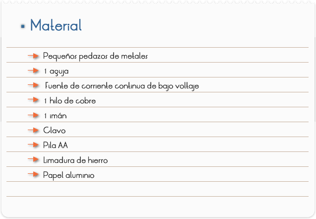
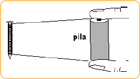
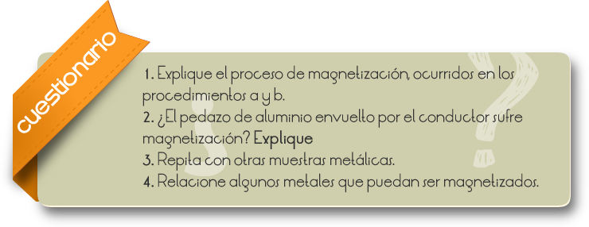

Objetivos
Comprobar que ciertos materiales se magnetizan y otros no y montar un pequeño electroimán.

1) Toma el clavo y envuélvalo con un hilo de cobre
2) Conecte las extremidades libres del hilo a la fuente C/C del Autolabor o a una o más pilas, conforme la Figura 1
Observación: el hilo de cobre debe estar encapado.

3) Acerque el conjunto de la Figura 1 a la limadura de hierro y observe si el clavo envuelto por el conductor sufre magnetización.
4) Tome un pequeño pedazo de aluminio y repita los procedimientos anteriores. Observe los resultados.

Comentarios
Un conductor al ser recorrido por una corriente eléctrica, crea en su entorno, un campo magnético. Sabemos que un átomo, es constituido básicamente por un núcleo central positivo, en torno del cual, se mueven los electrones (cargas negativas). Este movimiento de los electrones, alrededor del núcleo atómico, puede ser comparado con el movimiento de los electrones libres (que constituye la corriente eléctrica) en un conductor de sección circular.
Por lo tanto, se concluye, que el movimiento de los electrones en torno al núcleo atómico, podrá generar un efecto magnético. Conviene recordar que el movimiento de rotación del electrón (spin) en torno de si mismo, también coopera para el establecimiento del campo magnético.
Siendo así, cada átomo aisladamente o conjuntos de átomos, podrán actuar como imanes infinitesimales, orientando sus polos en determinada dirección.
En la naturaleza, no son todos los materiales que presentan la propiedad de magnetizarse de forma semejante al hierro (ferromagnetismo), restringiéndose esta capacidad casi exclusivamente a los metales de triade del hierro (Fe, Co, Ni), sus ligas, Gadolinio (Gd), Disprosio (Dy) y algunas otras ligas especiales.
Se atribuye el campo magnético de nuestro planeta, a las grandes corrientes eléctricas que se mantienen en movimiento en su núcleo líquido.